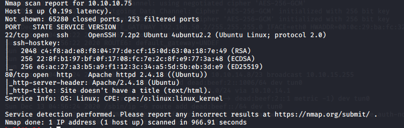

nmap results are as follows

so start with port 80 its the way in and port 22 will help inside
version of ssh isnt hte way in usually
information gathering:Ubuntu
Search for exploits of Apache httpd 2.4.18

linux/local/46676.php
local means u have to be on the machine in order to exploit it so we are here after remote exploits not even denial of service types

this machine is more like a ctf types
so we can try nikto or dirbuster types
or could do enumeration
when u do view page source there are stuff hidden in it at times also


so went to http://10.10.10.75/nibbleblog/

googled its source code bt couldnt find anything of importance

2nd one is .rb meaning metaspploit module is availanle
SQL inection can give and basically dump a ton of stuff or at times give u nothinh
2nd one is more juicy for remote code exceution
used following stuff


hence u gotta be authenticated so randomly tried /admin.php it worked though

so technical way is to go to durbuster and do directory busting


got our results
since it is soeone ka personal blog gotta do something abt passwords like using the most common passwords and stuff
username and password were
admin
nibbles
author knew abt it hence so

got the nibbleblog version written at the end


set targeturi as /nibbleblog

its basically uploading image.php onto the net

its giving the lbierty to upload .php extensuon wala image which shouldnt happen na at the first place
so we uploaded a php file and thus got a reverse shell on the system

thus arent high level user na
easiest way is to search the os for priveleg escalations and all
- history command isnt found

- bt history is imp as it stores whatever has been typed including passwords

sudo -l is for no passwords bt it requires a password to do that
the above photo mai monitor.sh can be run na wothout a password


thus there is no personal/stuff folder so hence no monitor.sh folder too
so we can create a shell script in these folders and get malicous
u should search for personal.zip too
4.4.0-104-generic #127-Ubuntu SMP search this for privelege escation
LinEnum.sh
linuxprivchecker.py
these 2 work
how to tranfer ??
we need to create a malicous file and trasfer it so vcreate folder personal

aise run monitor.sh

aother way to file transfer is as follows


bash -i when run with sudo gives u root access directly


bash -i means bash interactive what happens with sudo comand is that u make it executable and running it gives u a bash shell
that bash will be run as root coz its executed as sudo na
https://netsec.ws/?p=309
imp site hai
sudo was run with full directoroy helped us rathert than sudo with just filename